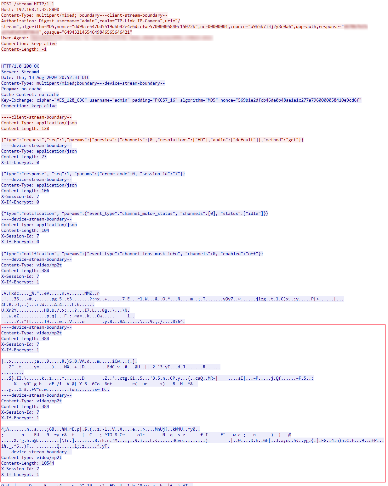
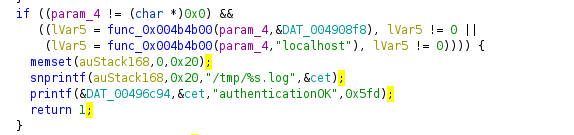
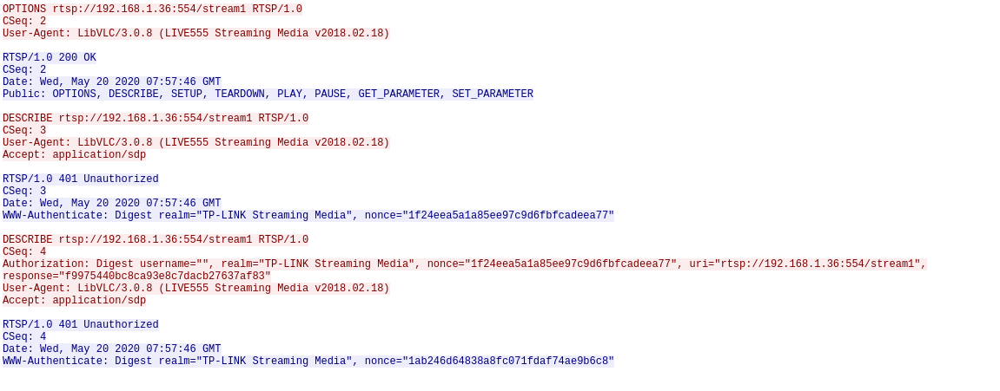
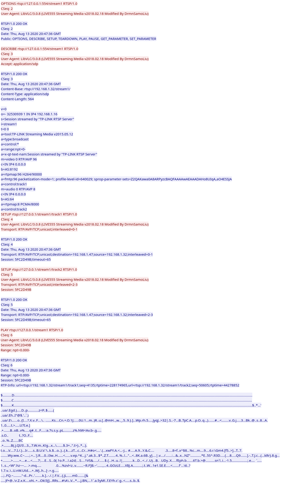

Accessing Video Feed
Disclaimer : This is a WIP. We've only managed to initiate a video session and decrypt a few frames the C200 is sending us. There's still a lot of work to do to get a stable video feed.
Let's be honest: no one wants an IoT device that forces you to create an account to be able to use and stream your video through servers god knows who has access to.
For a device that's made for security and highly
impacts privacy when compromised, it's very important that every bit of data it sends is within our own control. That's why we tried hard to see if we could get the video feed from the C200 without using the official app.
There
are three ways to get the video feed from the C200:
1. Http service hosted on TCP port 8800
2. RTSP service hosted on TCP port 554
3. ONVIF
However ONVIF is basically sending video feed over RTSP, so we're
only left with 1 and 2.
Video Over Http
Http is the default way the official app is requesting the video feed.
The process is rather simple:
- Send POST request to
http://[ip address]:8800/streamand Authenticate with digest auth in request header.
You will also need to specifyContent-Type: multipart/mixed; boundary=--client-stream-boundary--in request header. - If your authentication succeeded, server will respond
HTTP/1.0 200 OKwith a special headerKey-Exchange:.
It will contain anoncethat can be used to generate AES decryption key and iv for the incoming video feed. [*] - You then send a continuation packet with json data :
{"type":"request","seq":1,"params":{"preview":{"channels":[0],"resolutions":["HD"],"audio":["default"]},"method":"get"}}
Which is the actual request for video feed. - After some response of json data, the encrypted video feed with
Content-Type: video/mp2twill finally come in. You will have to parse the packets and decrypt them.
If what's above is too much to take in, here's the TCP stream from wireshark:
Click here for larger image.

We
wrote a python script to automate all of this. Although the result is not perfect, we hope the efforts we made can open up an opportunity for people who have more experience in processing web video stream to refine it. Ultimately
providing a better solution for community that wishes to have more customized way to access their own C200 camera feed.
{kind=link}
RTSP and Possible Authentication Bypass
TP-Link actually provides a way to let you access C200 via RTSP : https://www.tp-link.com/us/support/faq/2680/
However, we found a possible security issue in
this feature.
The function responsible for handling RTSP authentication is in /bin/cet , located at address 0x42689c :

This specific portion of code is checking if
the requested URL contains 127.0.0.1 or localhost . If it does, then the whole username
/ password authentication process will be bypassed.
The bypass can be clearly demonstrated in wireshark TCP stream. For example, following is what normally happens if you failed to provide valid username and password
to C200 RTSP service:

RTSP
server will respond RTSP/1.0 401 Unauthorized if you request anything other than OPTIONS.
However, if you change the IP address in the request to 127.0.0.1,
then the following will happen:

As
we can see, we successfully set up a RTSP session and have it playing what is supposed to be the video stream.
However the video player ( vlc player in this
case ) failed to display anything useful. Unfortunately as for now we are not sure what the issue might be.
In the example above we are using modified Live555 library
for sending RTSP request to the IP address of the C200, but at the same time keeping the request URL containing 127.0.0.1 . It's not a trivial task, and
building vlc player takes a lot of time.
Thankfully we found a python script shared by El Sampsa at Stackoverflow:
https://stackoverflow.com/questions/28022432/receiving-rtp-packets-after-rtsp-setup
His script allows easy separation of target IP address and request URL, however it also does not manage to make sense of everything
C200 RTSP server is sending. So processing of incoming stream remains to be refined.
{kind=link}
{kind=link}
{kind=link}